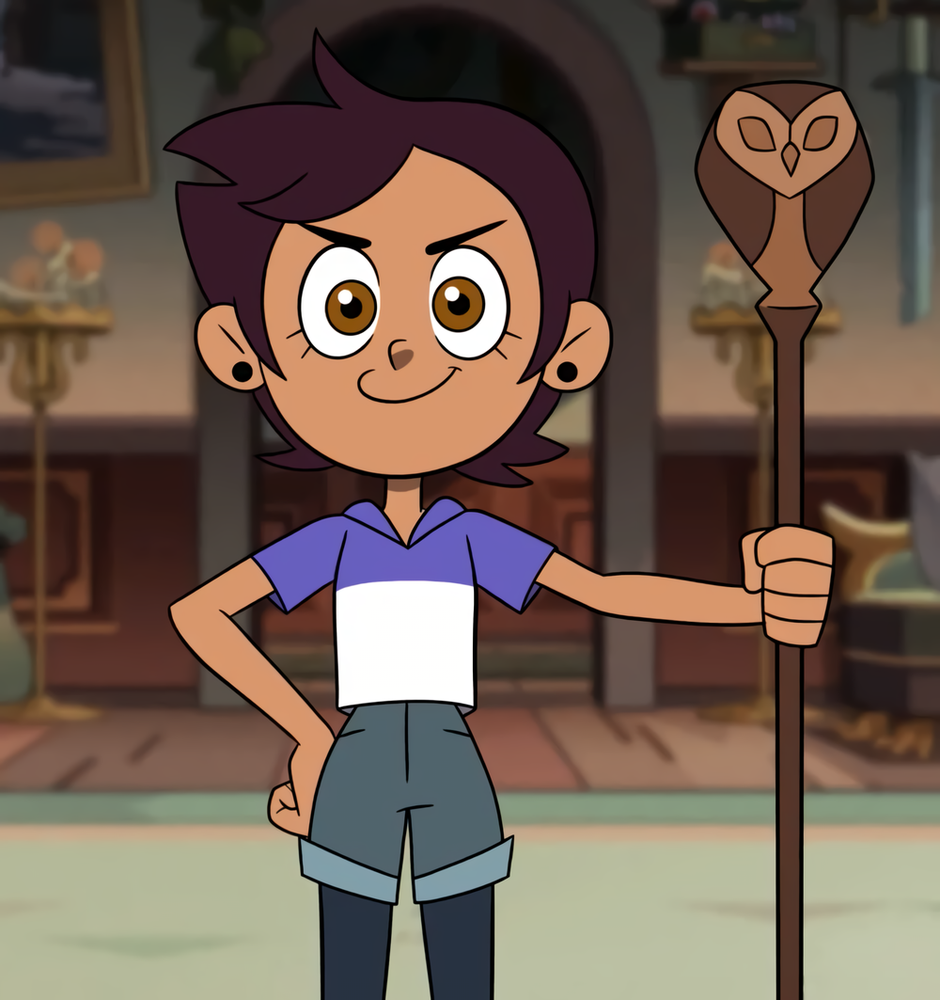
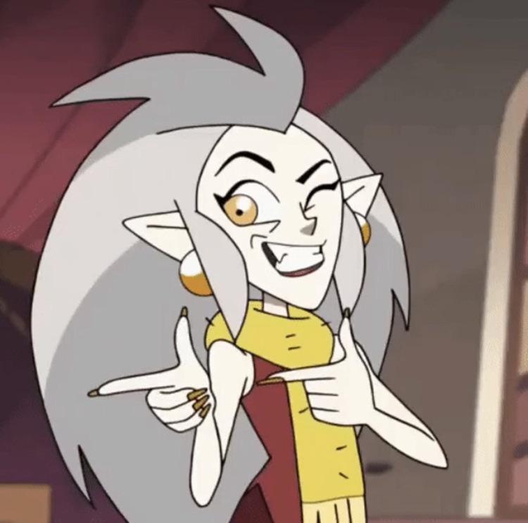
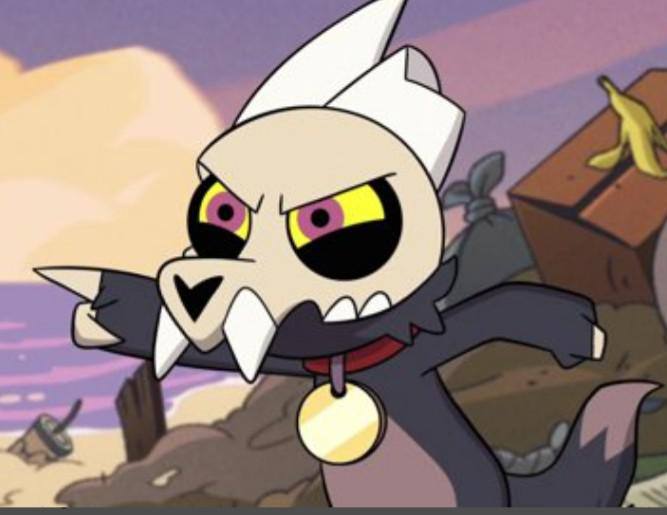
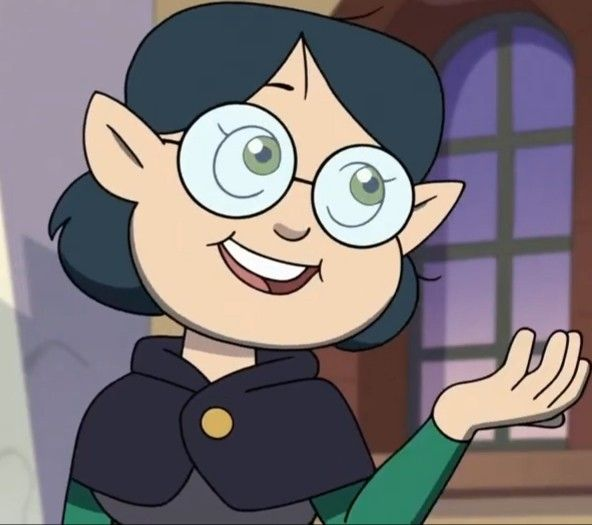
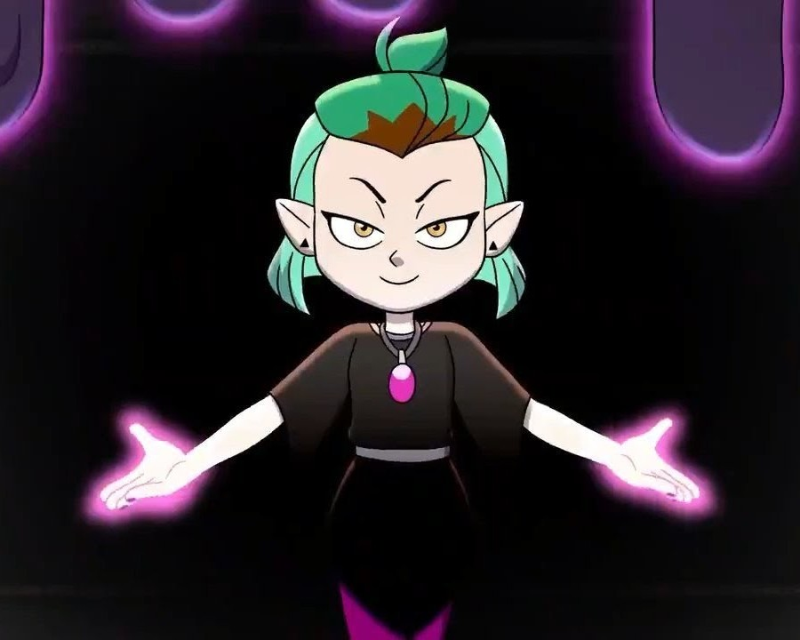

Welcome the Omnipotent Owls to the dodgeball world! The members in this team consist of magic users, and get this--a human! While this team doesn't seem like the most conventional, they have different strengths that put them above the rest.
Members:
Luz Noceda

Luz Nozeda is different from her other members because she's human. And while she may seem limited by her lack of magic, that won't stop her from working her very best for the team's success. She has undestructable optimism and grit that overcomes the hardships as a non-magic user in a magical world.
Eda Clawthorne

Eda Clawthorne is a powerful member of the team, if not the most powerful witch in the Boiling Isles. She was an absolute prodigy in magic during her years at Hexide. Unlike other witches, she can use any magic she wants, not limeted to a singular type.
King Clawthorne

King Clawthorne is the adopted son of Eda. Like Luz, he also doesn't quite use magic. And that's because he's a type of demon (we think). While he could use glyphs that Noceda shows him, he has a trick up his sleeve. He's cute! This is a great distraction to the other team. His teammates just have to try not to look in his direction.
Willow Park

Willow Park--sweet on the outside, but an absolute beast on the field. She specializes in plant magic, which is a heightened advantage in the outdoors. Unlike other witches, she physically works out, making her not just magically strong, but also physically strong.
Amity Blight

Amity Blight is top student of her classes at Hexide. She specializes in abomination magic, which allows her to add a few more members to the team. Her abominations can easily aid with getting opponents out of the game and shielding her team from opponents.